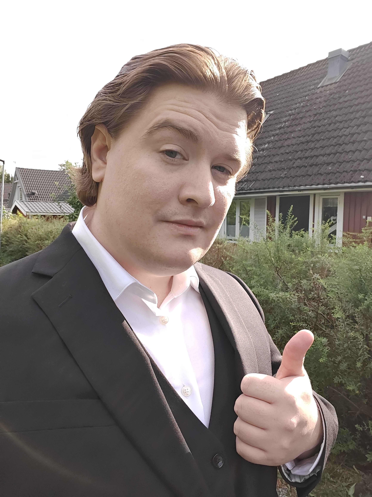

About Me
About Me
 Github
Github
 LinkedIn
LinkedIn
 Contact Me
Contact Me
 CV
CV
Focus
Gameplay and Systems
About Me
Gameplay, AI, and Network Programmer focused on building responsive systems in Unreal Engine.
I enjoy creating game systems that feel smooth for players and clear for teams to maintain. Most of my work is in C++ and Unreal Engine, where I focus on gameplay architecture, multiplayer implementation, AI behavior, and practical production tooling.

Focus
Gameplay and Systems
Primary Stack
Unreal Engine + C++
Award Highlight
Swedish Game Awards 2025
Role Scope
AI, Networking, Data driven programming
I have always liked solving complex technical problems, especially when the solution improves how a game feels. Over time, that interest turned into a strong focus on systems design and technical gameplay implementation.
I am comfortable working both independently and in cross-discipline teams. On team projects, I care a lot about communication, iteration speed, and keeping systems readable so other developers can contribute quickly.
Outside production work, I also build engine-level experiments and plugins to sharpen my technical foundations. I like turning repeated workflow pain points into reusable tools.
SteamWrecked
Award-winning team project and successful Steam release
Contributed in AI programming, QA testing, and managing the developement of the live product.
SubOptimal
Enhanced Multiplayer Development
Worked on networking and physics systems while maintaining iterative gameplay improvements.
Engine and Plugin Work
Reusable tooling and useful systems
Worked on developing systems and plugins based on my teams needs for group and personal projects
Mentoring
Teaching through Kodcentrum
Volonteered at teaching kids how to code in scratch and Python, tutoring programming fundamentals through beginner-friendly projects.
I am always interested in discussing game programming opportunities, collaborations, and technical challenges. Feel free to reach out if you want to work together.